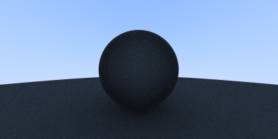
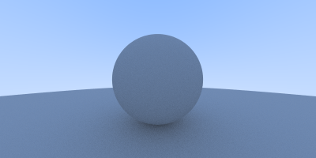
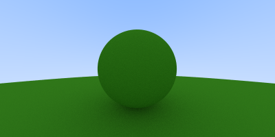
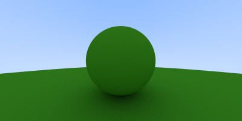
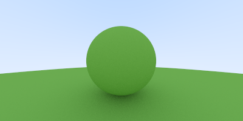

in the previous blog post of this series, we have successfully rendered a sphere and shaded it using surface normals. in this blog post, we will work with hittables and diffuse materials.
before starting to write out the logic for different materials, let's design an interface which encapsulates all the possible hittable objects i.e. objects on to which rays can strike, within our path tracer.
type HitRecord struct {
N, P Vector
T float64
}
type Hittable interface {
Hit(r Ray, tMin, tMax float64) (bool, *HitRecord)
}
Hittable interface encapsulates all the structs which
implement Hit function with that specific function signature.
Hit function takes in a ray which is shot towards it and also
an interval of t (i.e. tMin and
tMax) and returns a boolean which indicates whether the ray
hit the object or not and also a HitRecord.
a hit record contains the metadata related to the rays which hit the
object. let me now explain which metadata is exactly being stored
in HitRecord, as it is pretty hard to guess from the single
lettered fields.
T is the value of t for which P(t) = Qt + d
ray hits that object. Hit function only considers those
values of t which lie in the range of tMin to
tMax i.e. tMin <= t <=
tMax.
P is the vectorical representation of the ray i.e. P(t) at
t = T.
N is the surface normal of the object at the hit point.
currently, we have the logic responsible for rendering a sphere within
RayColor function.
func RayColor(r Ray) Vector {
center := NewVector(0, 0, -1)
radius := 0.5
found, p := r.HitSphere(center, radius)
if found {
normal := r.At(p).SubtractVector(center).UnitVector()
return NewVector(normal.X+1, normal.Y+1, normal.Z+1).MultiplyScalar(0.5)
}
unitVec := r.Direction.UnitVector()
t := 0.5 * (unitVec.Y + 1)
color := NewVector(1, 1, 1).MultiplyScalar(1.0 - t).AddVector(NewVector(0.5, 0.7, 1.0).MultiplyScalar(t))
return color
}
let's design a simple struct which stores all necessary data related to a
sphere (which is center and radius, at the moment) and also implements
Hittable interface.
type Sphere struct {
Centre Vector
Radius float64
}
func NewSphere(centre Vector, radius float64) Sphere {
return Sphere{
Centre: centre,
Radius: radius,
}
}
func (s Sphere) Hit(r Ray, tMin, tMax float64) (bool, *HitRecord) {
cq := r.Origin.SubtractVector(s.Centre)
a := r.Direction.DotProduct(r.Direction)
b := 2 * r.Direction.DotProduct(cq)
c := cq.DotProduct(cq) - (s.Radius * s.Radius)
d := b*b - 4*a*c
if d >= 0 {
hitRecord := &HitRecord{}
t := (-b - math.Sqrt(d)) / (2 * a)
if tMin <= t && tMax >= t {
hitRecord.T = t
hitRecord.P = r.At(t)
hitRecord.N = hitRecord.P.SubtractVector(s.Centre).DivideScalar(s.Radius)
return true, hitRecord
}
t = (-b + math.Sqrt(d)) / (2 * a)
if tMin <= t && tMax >= t {
hitRecord.T = t
hitRecord.P = r.At(t)
hitRecord.N = hitRecord.P.SubtractVector(s.Centre).DivideScalar(s.Radius)
return true, hitRecord
}
}
return false, nil
}
the logic is pretty much same as HitSphere function but
rather than returning the hit point value, we're returning the hit record.
func (r Ray) HitSphere(center Vector, radius float64) (bool, float64)
func (s Sphere) Hit(r Ray, tMin, tMax float64) (bool, *HitRecord)and this time, we are calculating both the roots of the quadratic equation. if the 1st root didn't lie in the range then check for the 2nd one. as in the later parts of the blog post, we will render multiple spheres then we need to caluclate both the roots else the image won't render as excepted.
let's utilize this new Sphere struct to render the
"bluish-purple" sphere that we rendered in the previous post.
we need to update the RayColor function to accept anything
that implements the Hittable interface and use its
Hit
method.
func RayColor(r Ray, h Hittable) Vector {
found, hitRecord := h.Hit(r, 0, math.MaxFloat64)
if found {
return hitRecord.N.AddVector(NewVector(1, 1, 1)).MultiplyScalar(0.5)
}
unitVec := r.Direction.UnitVector()
t := 0.5 * (unitVec.Y + 1)
color := NewVector(1, 1, 1).MultiplyScalar(1.0 - t).AddVector(NewVector(0.5, 0.7, 1.0).MultiplyScalar(t))
return color
}
create a new sphere using NewSphere function (sorta like
constructor for Sphere struct) as follows:
sphere := NewSphere(NewVector(0, 0, -1), 0.5)and pass it into RayColor function to get the color
color := RayColor(ray, sphere)on running the script, you should see the same "bluish-purple" sphere.
currently, our path tracer can render only one hittable object at once. let's make an abstraction which will act like a list of all the hittable objects in the rendered image, aka scene.
type Scene struct {
Elements []Hittable
}
func NewScene(elements ...Hittable) Scene {
return Scene{
Elements: elements,
}
}
let's also implement the Hit method onto
Scene struct, which takes in a ray as a parameter and loop
throughs all the hittable objects and return the hit record for the one
which the ray hits.
func (s Scene) Hit(r Ray, tMin, tMax float64) (bool, *HitRecord) {
hitAnything := false
closest := tMax
record := &HitRecord{}
for _, e := range s.Elements {
hit, tempRecord := e.Hit(r, tMin, closest)
if hit {
hitAnything = true
closest = tempRecord.T
record = tempRecord
}
}
return hitAnything, record
}now let's create a scene with the bluish-purple sphere and a floor.
sphere := NewSphere(NewVector(0, 0, -1), 0.5)
floor := NewSphere(NewVector(0, -100.5, -1), 100.0)
scene := NewScene(floor, sphere)
as we have implemented Hit function to
Scene struct, we must be able to pass scene to
RayColor function.
color := RayColor(ray, scene)
rgb = rgb.AddVector(color)on running the script, you'll see a beautiful lil' sphere and green colored floor.

the current image size is 256x256, let's change it to 400x200 to capture a bit more of the floor on to the image.
imageWidth := 400
imageHeight := 200
viewportWidth := 4.0
viewportHeight := 2.0
the ratio between viewportWidth and
viewportHeight must be always equal to the aspect ratio, if
the pixels are equally spaced in the viewport.

lovely!
here is another image with silly sphere army.
sphereOne := NewSphere(NewVector(0, 0, -1), 0.5)
sphereTwo := NewSphere(NewVector(1, 0, -1.5), 0.6)
sphereThree := NewSphere(NewVector(-1, 0, -1.5), 0.6)
floor := NewSphere(NewVector(0, -100.5, -1), 100.0)
scene := NewScene(sphereOne, sphereTwo, sphereThree, floor)
there are mainly two types of reflection which a light ray undergoes in the real world - specular and diffuse. specular reflection is the regular type of reflection which you might have studied in your high school, where the angle of incidence is equal to the angle of reflection, i.e., the laws of reflection hold true. in diffuse reflection, the reflected ray and incident ray are not symmetrical about the normal; the reflected ray bounces off in a random direction from the surface.

to simulate the light ray bouncing off in random directions, we can generate random unit vector and check if the unit vector and the surface normal are in the same direction, by taking dot product. if yes, then direction of reflected ray would be equal to that of the unit vector.
let's code out a few utility functions which will help us in generating these unit vectors.
func RandomInRange(min, max float64) float64 {
return min + (max-min)*rand.Float64()
}
func RandomUnitVector() Vector {
for {
v := NewVector(RandomInRange(-1, 1), RandomInRange(-1, 1), RandomInRange(-1, 1))
if math.MinInt64 < v.Length()*v.Length() && v.Length()*v.Length() <= 1 {
return v.UnitVector()
}
}
}
func RandomOnHemisphere(normal Vector) Vector {
onUnitSphere := RandomUnitVector()
if onUnitSphere.DotProduct(normal) > 0 {
return onUnitSphere
} else {
return onUnitSphere.MultiplyScalar(-1)
}
}RandomInRange function returns a random floating point
number in the range of [min, max).
RandomUnitVector function returns a random unit vector.
RandomOnHemisphere function returns a random unit vector in
the direction of the hemisphere where the surface normal at that hit
point is pointing to.
after the light ray strikes an object (to be specific, hittable object but i would be using "object" as hittable object is kinda mouthful), the bounces off in a random direction. if the light ray strikes again to another object then it is again reflected to a random direction and so on - basically recursion.
we have to also add a depth to the recursion i.e. the max number of times the recursion would take place else there would be possiblities of infinite loop.
implementing it in code is pretty much straightforward.
func RayColor(r Ray, h Hittable, depth int) Vector {
if depth <= 0 {
return NewVector(0, 0, 0)
}
found, hitRecord := h.Hit(r, 0, math.MaxFloat64)
if found {
direction := RandomOnHemisphere(hitRecord.N)
return RayColor(NewRay(hitRecord.P, direction), h, depth-1).MultiplyScalar(0.7)
}
unitVec := r.Direction.UnitVector()
t := 0.5 * (unitVec.Y + 1)
color := NewVector(1, 1, 1).MultiplyScalar(1.0 - t).AddVector(NewVector(0.5, 0.7, 1.0).MultiplyScalar(t))
return color
}
0.7 is the attenuation which represents the factor by which
the intensity of the light ray decreases each time it hits an object. the
more surfaces the light ray strikes, the less the intensity, meaning
darker the color. this simulates the behavior of a light ray in real life
- every surface from which the light ray bounces, the surface absorbs a
certain portion of its intensity, thereby decreasing the intensity of the
light ray.
to render a diffuse material, pass in the depth parameter to
RayColor function in the main script
color := RayColor(ray, scene, 50)
rgb = rgb.AddVector(color)here is the rendered image. i have set samples per pixel to be 400 to properly see the shadows of the sphere.

you should be able to see slight shadows underneath the sphere cause area between the bottom of the sphere and the ground had the most of light ray bounces.
the code might look all fine but there is a slight issue related to floating point numbers. when a ray hits a surface, the path tracer shoots new rays from that hit point to calculate shadows. due to floating point precision issues, the hit point might end up being either slightly above or below the surface. when the path tracer shoots a new ray from this point, it immediately hits the same surface it just came from. this is called as shadow acne.
to fix this, we have to just change tMin to 0.0001 (or any
small floating point number so as to handle these cases of floating point
precision issues).
found, hitRecord := h.Hit(r, 0.0001, math.MaxFloat64)
the shadows underneath the sphere is very clear now.
the sphere can also be rendered in a different color by playing around with attenuations of different components i.e. attenuation of R, G and B.
direction := RandomOnHemisphere(hitRecord.N)
return RayColor(NewRay(hitRecord.P, direction), h, depth-1).MultiplyComponents(NewVector(0.3, 0.6, 0.1))
with our current implementation of diffuse materials, the incident light ray has equal probability to scatter in any random direction, which is in the same direction as the surface normal. this renders a nice soft diffuse model.
lambertian distribution is a more accurate representation of real world diffuse materials. in lambertian distribution, the incident ray is scattered in a way which is proportional to cos(φ), where φ is angle between the incident ray and the surface normal. due to this, the incident ray is more likely to be scattered in a direction closer to the surface normal.
if you draw circles parallel to the equator at different heights on a sphere, you will notice that the cirles get smaller as you move towards the poles i.e. the top. if a sphere has a uniform point density, then more points would be found in the areas where these circles are smaller i.e. the top to maintain equal point density in all the regions on the sphere.
when these uniformly distributed points are used to create reflection direction vectors, we naturally get a lambertian distribution distribution with more reflection directions near the surface normal.
implementing it in code is pretty simple as we just need to add a random unit vector to the surface normal at that hit point.
if found {
direction := hitRecord.N.AddVector(RandomUnitVector())
return RayColor(NewRay(hitRecord.P, direction), h, depth-1).MultiplyComponents(NewVector(0.3, 0.6, 0.1))
}
if you keenly observe the previously rendered green sphere image and the current one using lambertian distribution, you will notice that in the current one the shadows are more pronounced.
the attenuation of green is set to be 0.6 i.e. 60% of the light is reflected back, but it looks a bit more dark than expected. it is because most of the image viewers expect the image to be "gamma-corrected" i.e. it excepts the values which are passed into the PPM file to undergo some non-linear transformation.
but we are not perfoming any kind of non-linear transformation i.e. the data which we are writing into the PPM exists in a linear space, due to which the image viewer misinterprets the image and shows it a bit more dark than expected.
gamma 2.2 is the standard gamma level for windows and apple devies that produces optimal colors for graphics but as an approximation we will use gamma 2.
the "2" in gamma 2 indicates the power to which the value in gamma space is raised to get the equivalent linear space value. we are going from linear space to gamma space, so we have to take the square root of the values before writing it to the PPM file.
ir := int(255.99 * math.Sqrt(rgb.X))
ig := int(255.99 * math.Sqrt(rgb.Y))
ib := int(255.99 * math.Sqrt(rgb.Z))
now it looks more like 60% of the light is being reflected back.
well, that's pretty much it for this blog post. play around and try generating some silly image -- that's where the real fun of writing a ray/path tracer lies! In the next post, we'll work with metallic materials.
got any thoughts related to this blog post? drop 'em over here - discussion